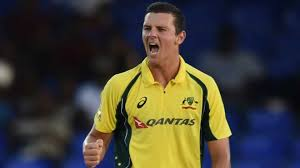

Australia ODI Team
Five-time ODI World Cup winners with a balanced squad.
About Australia ODI Team
Country: Australia
Home Ground: Various (e.g., MCG, Melbourne)
Captain: Pat Cummins
Coach: Andrew McDonald
Australia’s ODI team is the most successful in World Cup history, known for its pace bowling and aggressive batting.
Australian Players
Pat Cummins (C)
Captain, pace bowler.
Steve Smith
Batsman, top-ranked anchor.
Travis Head
Batsman, aggressive opener.
Marnus Labuschagne
Batsman, middle-order.
Glenn Maxwell
All-rounder, explosive hitter.
Mitchell Marsh
All-rounder, power-hitter.
Alex Carey
Wicketkeeper-batsman, reliable.
Mitchell Starc
Bowler, pace spearhead.

Josh Hazlewood
Bowler, accurate pacer.
Adam Zampa
Spinner, wicket-taker.
Sean Abbott
Bowler, all-rounder.